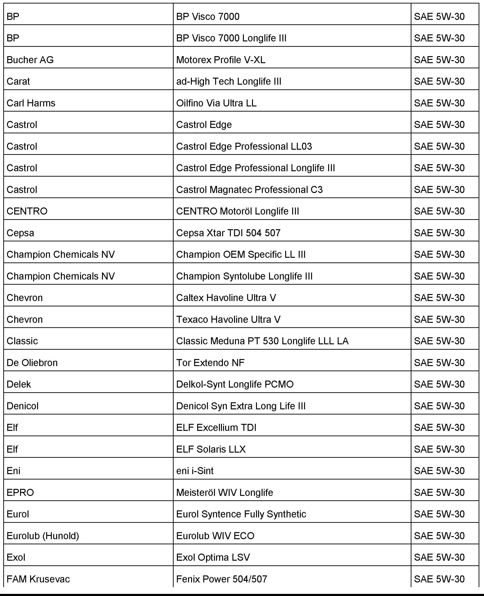
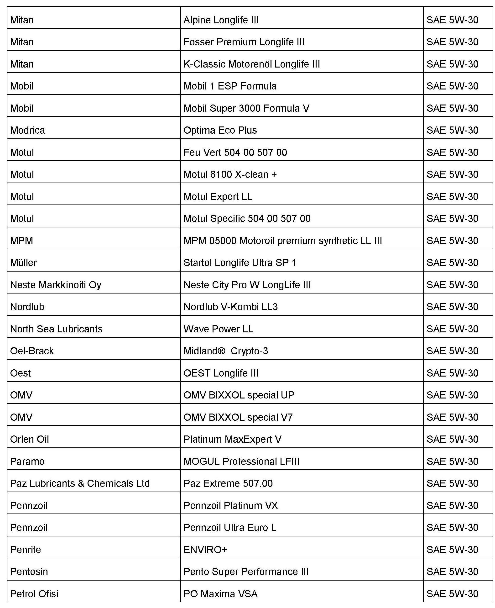
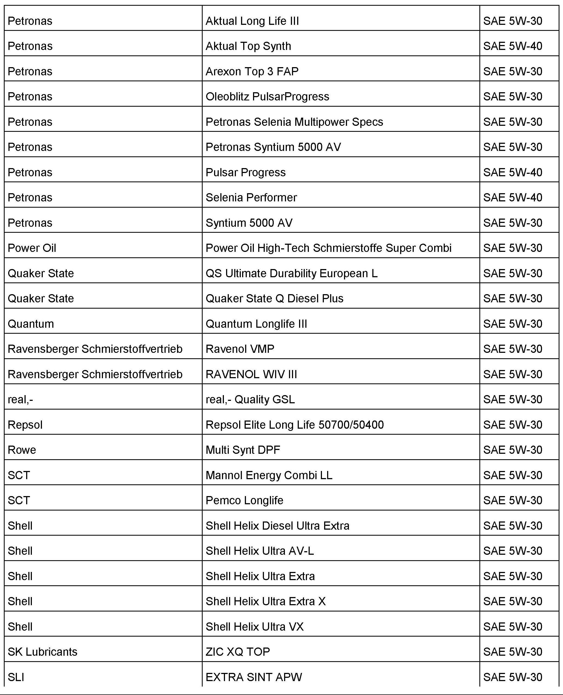

Engine - Oils Meeting Manufacturer's Standard
17 12 05December 5, 2012
2012855 *Supersedes Technical Bulletin V170907 dated June 30, 2009 due to
additional model year applicability and updated oil standard lists to current specifications.*

Vehicle Information
Condition
Engine Oils Which Meet Volkswagen Oil Quality Standard VW 502 00/505 00/505 01 and VW 504 00/507 00 (U.S. ONLY)
Technical Background
Information only.
Production Solution
No production change required.
Service
Attached is a "Worldwide" list of engine oils which currently meet Volkswagen Oil Quality Standard VW 502 00/505
00/505 01 and VW 504 00/507 00.

Quick Reference Guide
Tip:
SOME ENGINE OILS LISTED ON THE ATTACHMENT MAY NOT BE AVAILABLE IN NORTH AMERICA. Please refer to the specific Vehicle Owners Manual, published Technical Bulletins and Fluid Capacity Charts to select the appropriate oil required for each Volkswagen vehicle.







The sample list shown are products generally available in the North American market that meet the Volkswagen Oil Quality Standard VW 502 00/505 00/505 01 and VW 504 00/507 00 specification at the time
of this publication.
Warranty
Information only.
Required Parts and Tools
No Special Parts required.
No Special Tools required.
Additional Information
All part and service references provided in this Technical Bulletin are subject to change and/or removal.
Always check with your Parts Dept. and Repair Manuals for the latest information.